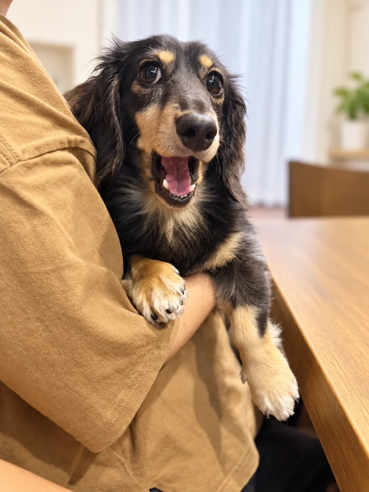
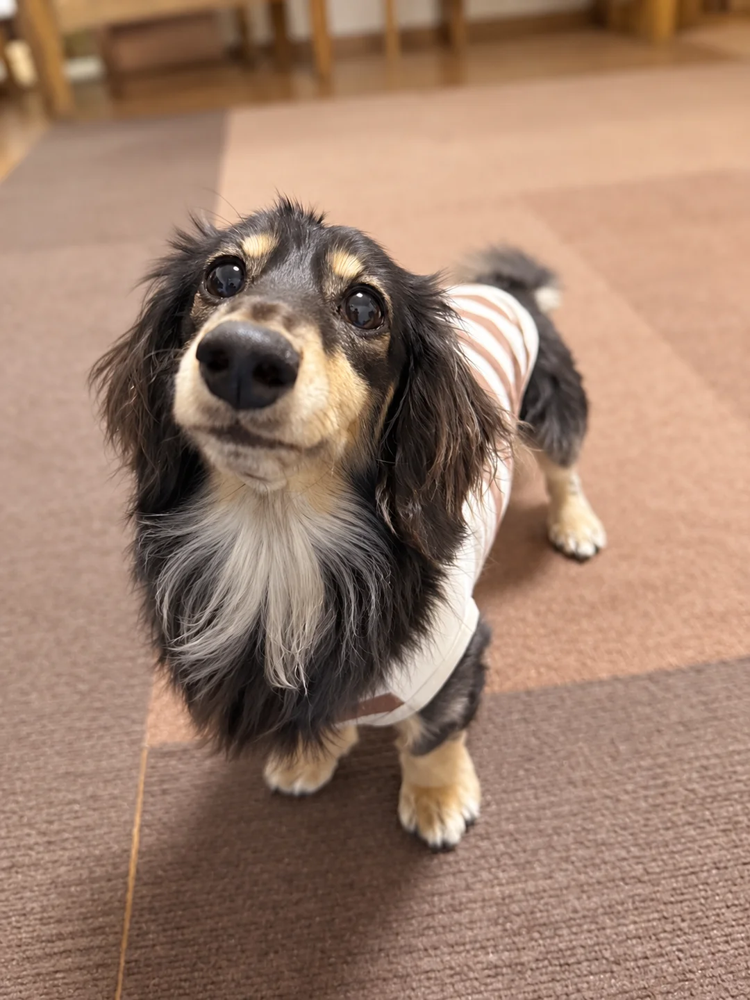
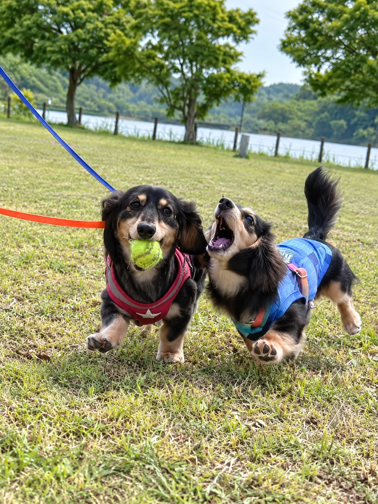

雨・冷えに備える犬服。
用途と実寸で選ぶ。レイン・防寒・マナー 479 点
毎日の主食を選び直す。
年齢・原材料・費用で 618 品を比べる
旅行に行きたい。
出発地と行き先から、休憩・立ち寄り・宿までのプラン
犬と泊まる宿を探す。
添い寝・ケージ・食事同伴の条件で653軒を比較
ちょっとしたおでかけ。
ドッグラン・カフェ・公園 750か所
旅行の持ち物をそろえる。
宿泊・車移動・排泄マナー・暑さと雨
困りごとから用品を探す。
散歩・お手入れ・ごはん・留守番の困りごとから
途中で犬と休む。
ドッグラン・散歩・犬同伴で食事できるSA・PA・道の駅
FROM YOUR CONCERN
困りごとから、直接。
気になることを選ぶと、その困りごとに合う用品・主食のページが開きます。
ON THE WAY
寄り道も、旅の楽しみに。
出発地・立ち寄り先(3か所まで、滞在時間つき)・行き先から、出発時刻ごとの予想時間を出します。運転が長い区間は、あとから休憩するSA・PA・道の駅を選べます。
わんこ旅行プランを作る →
LITTLE MOMENTS, BIG LOVE.
なんでもない時間が、
いちばんの宝もの。
抱っこも、遊びも、ひと休みも。
わんことの毎日を、もっと心地よく。

いっしょが、うれしい。
いつもの暮らしに、小さなしあわせ。

そのまなざしに、応えたい。
うちの子に合うものを、ひとつずつ。

きょうも、おつかれさま。
ほっとできる時間を、いっしょに。

FOR OUR PARTNERS
施設・メーカーの皆さまへ
犬と楽しめる宿・お出かけ先・カフェ、犬用品の掲載相談について。施設や商品のこだわり、おすすめポイント、写真提供、掲載情報の訂正などをお寄せいただく窓口です。
内容を確認のうえ、掲載を検討いたします。広告・商品提供を伴う場合は、その旨を明記します。
掲載・取材のご相談
お問い合わせ窓口のご案内